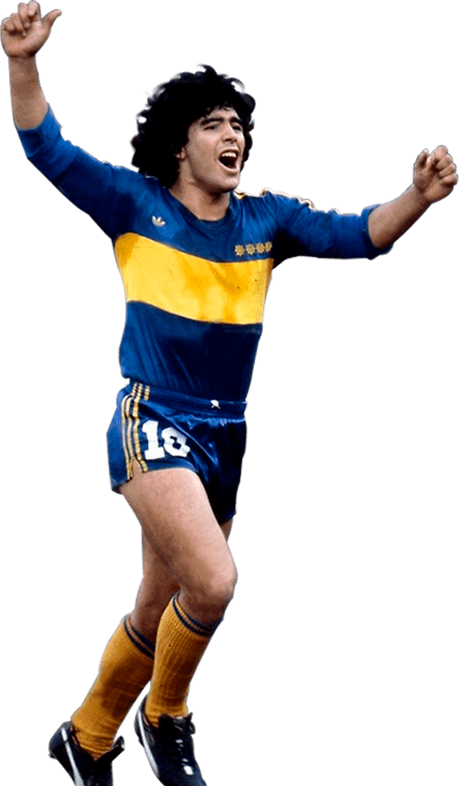
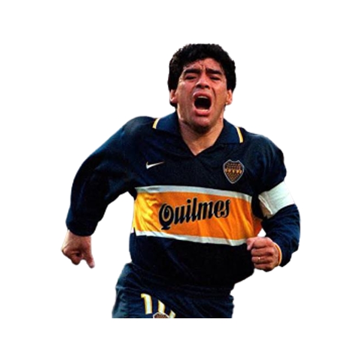

Maradona spent five years at Argentinos Juniors, from 1976 to 1981, scoring 115 goals in 167 appearances before his US$4 million transfer to Boca Juniors.Maradona received offers to join other clubs, including River Plate who offered to make him the club's best paid player. However, River decided to drop its bid due to its large payroll in keeping Daniel Passarella and Ubaldo Fillol.
Maradona signed a contract with Boca Juniors on 20 February 1981. He made his debut two days later against Talleres de Córdoba, scoring twice in the club's 4–1 win. On 10 April, Maradona played his first Superclásico against River Plate at La Bombonera stadium. Boca defeated River 3–0 with Maradona scoring a goal after dribbling past Alberto Tarantini and Fillol. Despite the distrustful relationship between Maradona and Boca Juniors manager, Silvio Marzolini, Boca had a successful season, winning the league title after securing a point against Racing Club. That would be the only title won by Maradona in the Argentine domestic league.
